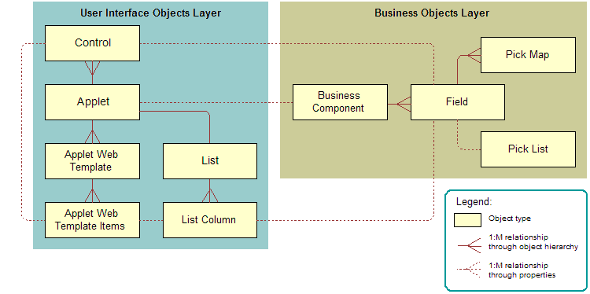
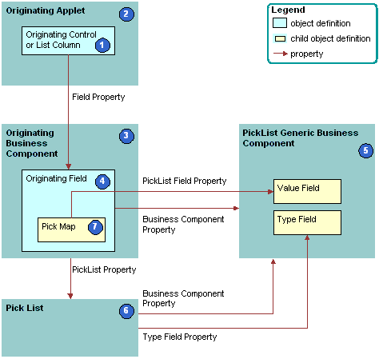

How Siebel CRM Creates a Static List
The following figure describes the relationships and objects that Siebel CRM uses to create a static list.
The following figure includes an example of how Siebel CRM creates a static list. This example implements the Quality list that is described in the preceding figure.
Explanation of Callouts
Siebel CRM uses the following objects to create a static list:
Originating control or list column. The control or list column that the user clicks to call the list. In this example, Quality is the originating control.
Originating applet. The applet that contains the originating control or list column. After the user chooses a value from the list, the originating control displays a revised value. In this example, the Opportunity form applet is the originating control. The Business Component property of the originating applet identifies the originating business component.
Originating business component. Business component that the originating applet references. This business component supplies the data that Siebel CRM displays in the originating applet. It updates one field in the current record in this business component after the user chooses a value in the list. In this example, the Opportunity business component is the originating business component.
Originating field. Field in the originating business component that the originating control represents. This field typically contains one pick map child that defines how the field from the PickList Generic business component maps to the originating business component. In this example, Quality is the originating field.
PickList Generic business component. Business component that provides the lists in a static list. You use the List of Values view in the Administration - Data screen in the Siebel client to administer the PickList Generic business component. For more information, see About the Picklist Generic Business Component.
Pick list. Identifies the business component that the pick applet references and the field that provides data for the pick applet. This business component is always PickList Generic. In this example, the Pick List is named Picklist Quality. The field of the originating control references the list.
Pick map. Defines a relationship between the Value field in the PickList Generic business component and the originating field. If the user chooses a value from the list, then this relationship provides the information that Siebel CRM requires to update the record in the current originating business component with information from the PickList Generic business component. The pick map is a child of the originating field.
Sequence property. Defines the sequence that Siebel CRM uses to update fields in the current record of the originating business component. It updates these fields with information from the pick business component. If you do not define sequence numbers on the pick map, then it updates fields in the order that it uses to create these fields.